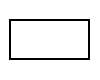
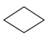
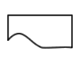
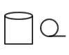

Home >> Flow Charts
Contents
Purpose
The purpose of Flow Charts is to define and communicate algorithms.
Back to topSymbols
| Symbol | Description | Symbol | Description |
|---|---|---|---|
| START / STOP |  | PROCESS | |
|  | DECISION | INPUT | |
|  | OUTPUT | CONNECTORS | |
|  | STORAGE | ||
An Example
Example: Insert a number Y into a descending sorted array X of N values.
Pros & Cons of Flow Charts
Advantages
- Lends itself to detail
- A good tool for structured walk-through of logic
Disadvantages
- Becomes too complicated